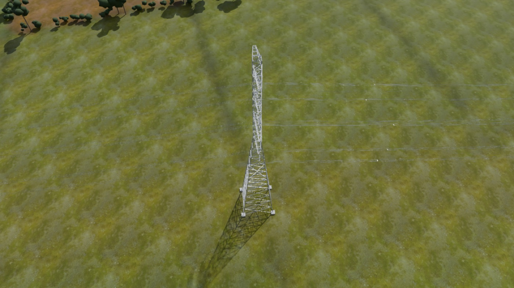
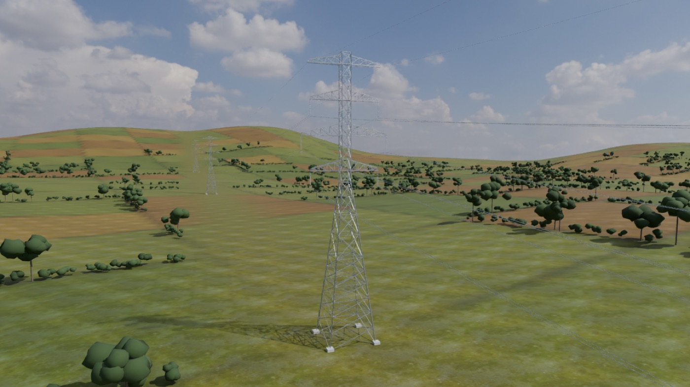

EarthState Twin
One ageing steel structure, in depth: from drawings and inspection data to an auditable digital twin, a capacity assessment and a ranked repair list for an engineer to sign off.
How it works →
World models for infrastructure
EarthState builds digital twins of real infrastructure that an engineer can check, and uses them to answer owners' questions about towers, lines, bridges and buildings.
Platforms
Every number comes from a calculation, not from a language model. Every result is logged, traceable to its inputs, and goes to an engineer for sign-off.
One ageing steel structure, in depth: from drawings and inspection data to an auditable digital twin, a capacity assessment and a ranked repair list for an engineer to sign off.
How it works →A whole overhead line on real terrain under storm loading, showing tower by tower how close each structure is to failure, and what strengthening would change.
How it works →A building or campus as a live 3D twin for operations: events, equipment health, a searchable knowledge base and an AI assistant on every page.
How it works →All three are research prototypes. The EarthState Twin method is the subject of UK patent application GB2626083.6 (filed 3 November 2026), patent pending.
Three ways to use them
We run the platforms on your asset and hand over a report and evidence pack an engineer can sign.
Your engineers use a platform on their own assets, with set-up, training and our support behind them.
Universities and companies use the platforms in joint projects, with papers and intellectual property agreed at the start.

Demos
Open the 3D Lab in your browser, take the EarthState Twin function tour, or follow an analysis from drawings to a signed result. No sign-in needed.
Demonstration models and data are synthetic or procedurally generated, and labelled as such.
All demosAdvisory
Lattice towers, steel structures and bridges, checked against the Eurocodes.
Line-level wind studies and strengthening options for network owners.
What AI should and should not decide on a live asset, and how to verify it.
ISO 19650 information requirements, IFC models and data architecture for asset owners.
Each engagement draws on an expert advisory network of academics and senior engineers in the UK and Europe, brought in per project.
Research practice
EarthState builds its own tools, tests them against independent results and publishes. We join universities and companies on research and innovation proposals, co-author papers, and agree how any new patents are shared before the work starts.

Founder
Dr.-Ing. Daguang Han founded EarthState. He is Associate Director of the Transport AI Innovation Centre (TRAICE) at Loughborough University. He has assessed in-service transmission towers and bridges, founded a research institute, and in 2026 led and directed the development of the EarthState Twin and Standfast platforms.
About the founder